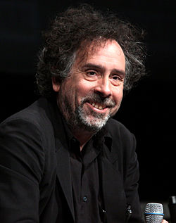

Timothy Walter Burton ou "Tim" Burton[1] (Burbank, 25 de agosto de 1958) é um cineasta norte-americano. Frequentemente, seus filmes acompanham os atores Johnny Depp e Helena Bonham Carter, com quem mantinha um relacionamento sério desde 2001 até 2014 e tem dois filhos, e Danny Elfman compondo a trilha sonora. Amante dos grandes nomes dos filmes de terror, já realizou projetos sobre Ed Wood e chamou para estrelar seus trabalhos, os notórios atores Vincent Price e Christopher Lee.
|  |
BiografiaBurton é o primeiro dos dois filhos de Bill Burton e Jean Erickson. Burton descreveu sua infância como peculiar, imaginativa e perdida em seus próprios pensamentos. Ele achava a vida doméstica e a escola difícil, participava de um grupo chamado OW SHIT STUDIOS (O.S.S) e fugia da realidade do cotidiano lendo livros sombrios de Edgar Allan Poe e assistindo a filmes de terror de baixo-orçamento, que mais tarde homenagearia na sua biografia de Edward D. Wood, Jr.. Outra figura cinematográfica de importância na infância de Burton é Vincent Price, cuja filmografia influenciaria a carreira do diretor. Após o colegial, ele ganhou uma bolsa da Disney para estudar no Instituto das Artes da Califórnia em Valencia, Califórnia. Ele estudou Animação por três anos e foi então contratado pelo Walt Disney Studios como aprendiz de animador. Trabalhou no desenho The Fox and the Hound, mas estava insatisfeito com a direção artística do filme. Foi durante esse período que Tim Burton fez seus primeiros três curtas metragens: a animação em stop-motion "Vincent", e dois live-actions, "João e Maria" e "Frankenweenie". A história desse último, que envolvia um cachorro morto num atropelamento sendo ressuscitado de forma análoga ao Frankenstein, foi considerada sombria demais pela Disney, motivo que levou à demissão de Burton.[2] O seu apego ao horror com sua habilidade para a comédia Burton conciliou três anos depois em Os Fantasmas se Divertem (Beetlejuice). Mesmo com o orçamento bastante baixo, o filme alcançou uma bilheteria razoável e levou o Óscar de Melhor Maquilhagem.[2] Foi com esse filme que o diretor finalmente se destacou e foi chamado para realizar uma superprodução: Batman, em 1989, que mais tarde teria a continuação Batman - O Retorno (Batman Returns), também com a direção de Tim Burton. Com a carreira em alta, o diretor resolveu filmar seu projeto pessoal intitulado Edward Mãos de Tesoura (Edward Scissorhands), sobre um rapaz que tem tesouras no lugar das mãos. Para o projeto, Tim Burton chamou o ator Johnny Depp, que a partir daí, viria a colaborar mais 7 vezes (até 2012) no filmes do diretor. 4 anos depois, o ator foi convidado para protagonizar a cinebiografia de Ed Wood, considerado tendenciosamente como o pior diretor de todos os tempos. Em 1996, estreou nos cinemas Marte Ataca! (Mars Attacks!), que é uma verdadeira carta de amor aos filmes "B" de ficção científica dos anos 50. Em 1999 chega aos cinemas a adaptação da conhecida história A Lenda do Cavaleiro sem Cabeça (1999) (Sleepy Hollow). Planeta dos Macacos, em 2001, Tim Burton readapta a obra Planeta dos Macacos, porém, o filme é massacrado pela crítica e fracassa nas bilheterias. 2003, Tim Burton volta a forma com Peixe Grande (Big Fish) sendo bastante elogiado pelos críticos. Em seguida, em 2005, chegam aos cinemas dois filmes do diretor, a readaptação da Fantástica Fábrica de Chocolate e a animação em stop-motion A Noiva Cadáver (Corpse Bride), dividindo a direção com Mike Johnson. Fechando a década de 2000, Tim Burton adapta o musical da Broadway Sweeney Todd, o barbeiro demoníaco da Rua Fleet. Em 2010 chega aos cinemas o bastante aguardado Alice no País das Maravilhas, adaptado dos livros Alice No País das Maravilhas e Alice através do espelho. O filme apesar de não ter ido muito bem nas críticas, faturou 1 bilhão de dólares mundialmente, transformando-se no filme mais bem sucedido, mercadologicamente falando, do Tim Burton. Em 2012, Tim Burton nos trás mais três filmes. O primeiro é Sombras da Noite, baseado na novela sessentista Dark Shadows criada por Dan Curtis. O filme fracassou nas bilheterias e dividiu bastante a crítica, mas que apesar de tudo despertou grande curiosidade do publico, filme que apresenta Barnabas Collins Johnny Depp como um vampiro. O segundo filme é Frankenweenie, que é uma refilmagem de seu curta metragem de 1984. A nova versão é em stop-motion e assim como o curta, em preto-e-branco. E em 2014 foi lançado "Grandes Olhos", um filme de baixo orçamento, com Cristoph Waltz e Amy Adams no elenco. |
Em 1997, escreveu "O Triste Fim do Pequeno Menino Ostra e Outras Histórias", que ganhou edição brasileira apenas em julho de 2007.
Apesar de ser infantil, o livro tem cenas de violência familiar, suicídio, sexo não-explícito e traição extraconjugal (o amante da adúltera é um ferro de engomar). Também não cabe aos poemas, finais felizes.
O caso do Pequeno Menino Ostra é modelar. O poema dedicado a contar seu triste fim ( depois do seu triste início, já rejeitado pela mãe por cheirar "a oceano e alga marinha"), fala de um pai com disfunção erétil avisado por um médico de que comer ostras propicia 'um desempenho sexual extra' ".
O show de aberrações é típico de Burton, mas nem sempre são feitos apenas de desgraças; é o caso, por exemplo, do menino Brie, um menino-queijo, que encontra a amizade de um vinho.